Установка элементов на печатную плату
Установку компонентов на монтажной плате можно выполнить одним из двух основных способов - горизонтальный и вертикальный. В обоих случаях выводы компонентов вставляются в отверстия платы, а все паяные соединения делаются на ее противоположной стороне.
Наиболее распространен горизонтальный монтаж компонентов. При этом компоненты располагаются вдоль поверхности платы, а их выводы вставляются в отверстия с шагом, соответствующим длине компонентов. Этот метод облегчает визуальный контроль схемы. Однако он требует больше места, чем вертикальный монтаж.
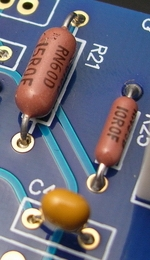
Рис. 1 - Горизонтальный монтаж компонентов на печатной плате
При вертикальном монтаже каждый компонент устанавливается перпендикулярно поверхности платы. Хотя при этом выводы также вставляются в отверстия платы, расстояния между этими отверстиями меньше, чем при горизонтальном монтаже. Поскольку при таком методе монтажа используется пространство над платой, сама плата может быть гораздо меньших размеров.
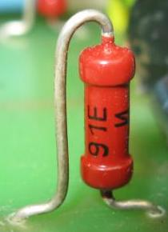
Рис. 2 - Вертикальный монтаж резистора на печатной плате
Если выбран вертикальный монтаж, то необходимо изолировать вывод, который идет вдоль компонента от его верхнего конца к монтажной плате. Это можно сделать при помощи полихлорвиниловой трубки, которая продается в магазинах для радиолюбителей. Трубка надевается на вывод компонента до его припайки. Она будет надежной защитой неизолированного вывода от места его крепления на корпусе компонента до входа в плату.
При вертикальном монтаже нужно помнить, что он уменьшает только размеры монтажной платы, при этом пространство, необходимое для размещения компонентов, просто приобретает «третье измерение».
Иногда желательно или просто необходимо объединить оба метода монтажа в одной схеме. Это может быть удобно в том случае, когда обнаруживается, что частично готовая схема не умещается на выбранной для нее перфорированной плате. Тогда достаточно легко установить часть крупных компонентов вертикально и продолжить сборку схемы.
В промышленных предприятиях выбор вариантов постановки элементов производится на основании технического нормативного документа - отраслевого стандарта ОСТ 4 ГО.010.030-92 "Электронные модули первого уровня. Установка изделий электронной техники на печатные платы".
Установка компонентов должна облегчать чтение маркировки. Особенно важно предусмотреть чтение маркировки полярности. Максимальное облегчение чтения маркировки облегчает контроль монтажа.
Варианты установки выводных компонентов на печатную плату
Вариант I
Вариант I – нет зазора между корпусом компонента и платой. Этот вариант хорошо подходит для установки компонентов на одностороннюю плату. Проводящий рисунок расположен на противоположной стороне от компонентов, что исключает контакт корпуса компонента и проводящего рисунка. Сокращение длины выводов компонентов снижает восприимчивость к электромагнитным помехам и снижает излучение собственных помех в эфир. Компоненты хорошо выдерживают вибрацию. Высота модуля снижается. Улучшается охлаждение компонента благодаря передаче тепла плате, что повышает надежность. Недостатком этого варианта установки является сложность отмывки модуля от флюса, обеспечение изоляции компонента от проводящего рисунка в случае двусторонней платы.
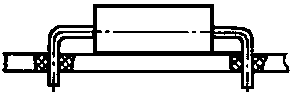
Рис. 3 - Вариант Iа установки резистора на печатной плате
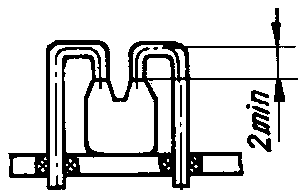
Рис. 4 - Вариант Iб установки конденсатора на печатной плате
Вариант II
Вариант II – между платой и корпусом компонента зазор. Применяется для двусторонних плат. Этот способ установки способствует удалению излишков флюса отмывкой, снижается нагрев микросхем при пайке. Возможно повреждение контактной площадки на односторонней плате при нагрузке на компонент сверху.
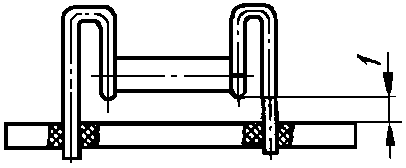
Рис. 5 - Вариант IIб установки трубчатого конденсатора на печатной плате
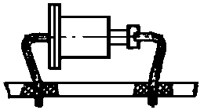
Рис. 6 - Вариант IIг установки диода на печатной плате
Вариант III
Вариант III – вертикальная установка (рис. 7). Компоненты с осевыми выводами располагаются плотнее. Такой вариант снижает технологичность, повышается вероятность замыкания между выводами, возрастает высота модуля. При вертикальной установке компонентов угол наклона компонента относительно вертикальной оси не должен превышать 15°.
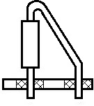
Примеры установки компонентов на печатную плату
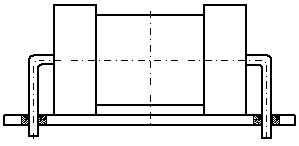
Рис. 8 - Вариант установки на ПП резистора МЛТ-2
(по ОСТ 4.ГО. 010.030-92, табл.24, стр.43, рис.19).
Радиус гибки выводов не менее 1мм
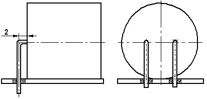
Рис. 9 - Вариант установки конденсатора К50-5 на ПП
(по ОСТ 4.ГО. 010.030-92, табл.30, стр.62, рис.21).
Радиус гибки выводов не нормируется
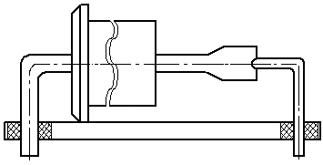
Рис. 10 - Вариант установки на ПП стабилитрона Д814Б
(по ОСТ 4.ГО. 010.030-92, табл.61, стр.193, рис.24).
Радиус гибки выводов не менее 1,5 мм
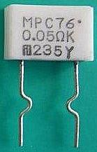
Рис. 11 - Формовка выводов, обеспечивающая зазор между платой и корпусом компонента.
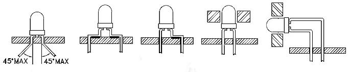
правильная
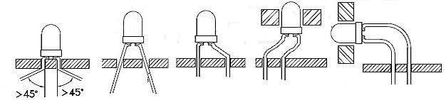
неправильная
Рис. 12 - Варианты установки светодиодов на печатную плату
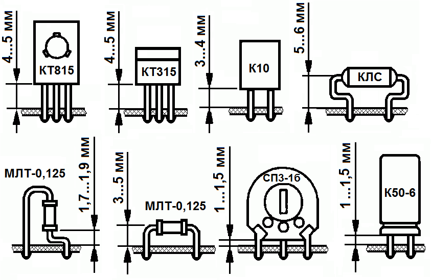
Рис. 13 - Варианты установки некоторых элементов на печатную платуИсточники
studwood.ru - Выбор вариантов установки элементов на печатную плату